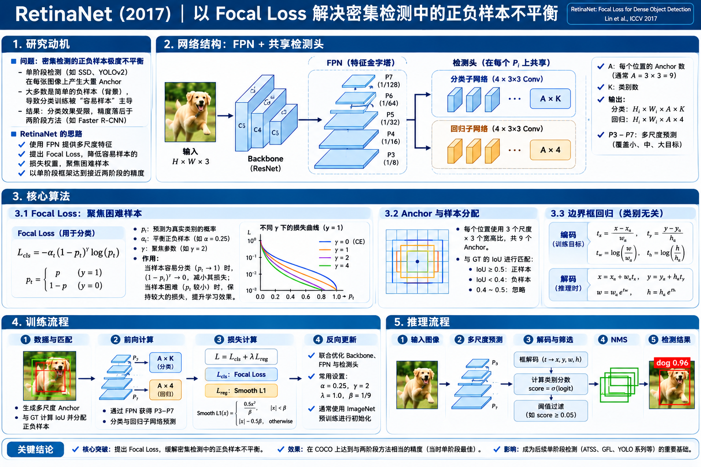

RetinaNet 算法原理研究笔记
SSD 与 YOLO 已经实现了单阶段密集预测，但精度仍难追上两阶段检测。RetinaNet 提出：关键瓶颈之一不是缺少候选框网络，而是海量容易背景样本主导了训练。用 Focal Loss 动态降低容易样本权重，让网络关注少数困难样本。
2017 年：一阶段检测为什么仍不够准确？
真正要解释的是训练时什么样本在决定梯度，而不是把 RetinaNet 理解成另一版 SSD。
两阶段筛除大量背景
RPN 提出较少的候选区域，第二阶段还能按正负比例抽样。背景样本被显式压缩。
单阶段密集预测
在规则网格与预设框上直接检测，覆盖区域多，却也产生远多于目标的背景候选。
不删样本，改变损失权重
让“已经被正确分类的容易背景”自动产生极小的 Loss，不再压过困难样本。
背景多并不意味着它们都重要。即使每个容易负样本仅产生很小的损失，乘以巨大的数量后仍可能占据很大权重。
科学问题
怎样让梯度预算集中在有意义的错误上？
SSD 采用困难负样本挖掘（Hard Negative Mining），靠挑选样本改变训练集合；RetinaNet 则保留密集样本，通过可微的 Focal Loss 让难例占据更高相对权重。
网络结构：ResNet-FPN + 两个独立预测子网络
先看一次完整前向：哪些模块重复使用特征，哪些模块真正执行分类或回归。

1.1 为什么 FPN 从 P3 开始，一直延伸到 P7？
你已经理解 FPN 的 Top-down + Lateral。RetinaNet 直接借用这套思路，但为了单阶段密集预测的计算与尺度覆盖，只保留 P3–P7，没有原版 FPN 两阶段检测中的 P2。
| 层级 | 相对输入 stride | 800×800 示意尺寸 | 基准 Anchor 面积 | 生成方式 |
|---|---|---|---|---|
| P3 | 8 | 100×100 | 32² | C3–C5 经 Top-down + Lateral FPN 得到 |
| P4 | 16 | 50×50 | 64² | |
| P5 | 32 | 25×25 | 128² | |
| P6 | 64 | 约 13×13 | 256² | C5 → 3×3 stride-2 Conv |
| P7 | 128 | 约 7×7 | 512² | ReLU(P6) → 3×3 stride-2 Conv |
1.2 检测头到底输出什么？为什么有两套 3×3 卷积？
分类头 · 每层 9K 通道
输入 Pℓ：H×W×256 → 连续四个 3×3 Conv(256) + ReLU → 3×3 Conv(9K) → Sigmoid。
每个位置的 9 个 Anchor 都有 K 个独立类别概率。COCO 的 K=80 时，最终输出 720 通道；没有单独的背景通道或 objectness 头。
回归头 · 每层 9×4 = 36 通道
输入 Pℓ：H×W×256 → 另外一套四个 3×3 Conv(256) + ReLU → 3×3 Conv(36)，输出线性回归值。
每个 Anchor 预测 (tₓ,tᵧ,t_w,t_h) 四个框偏移量；原版 RetinaNet 的回归是 class-agnostic，不是每类再预测四个。
Anchor、GT 分配与边框回归：每个检测位置怎么工作？
先定候选框形状，再判断它应当学习什么；不要把 Anchor 生成和 Focal Loss 混为一谈。
2.1 每位置 9 个 Anchor 从哪里来？
在 P3–P7 的每个空间位置，均定义 3 个宽高比 × 3 个面积倍率 的九个预设框。Anchor 是固定的几何参考框，网络并不先预测它们的坐标；学习的是每个 Anchor 的分类分数与位置偏移。
基准面积 32²，比例 1:1；宽和高都为 32 像素。
scale = 2j/3, j∈{0,1,2}
w = base × scale × √(宽:高)
h = base × scale / √(宽:高)
原论文比例集合写作高:宽 = 1:2、1:1、2:1；以上公式统一先换成“宽:高”。每个位置都同时存在 9 个框，而不是三选一。
2.2 正负样本如何分配？没有 SSD 的 1:3 负样本采样吗？
把每个 Anchor 与 GT 计算 IoU，寻找最大重叠的目标（至多匹配一个 GT）：
正样本 · IoU ≥ 0.5
指定为其匹配 GT 的类别。该 Anchor 的 K 维分类标签中，对应类别为 1，其他类别为 0；同时回归目标框偏移量。
负样本 · IoU ＜ 0.4
没有匹配到足够接近的目标；K 个类别标签全部为 0。参与分类损失，不参与框回归。
忽略 · 0.4 ≤ IoU ＜ 0.5
处于模糊区间，不参与对应 Anchor 的分类或回归损失，减少接近边界的冲突监督。
2.3 边界框回归：为什么是每个 Anchor 4 个数，而不是每类 4 个？
RetinaNet 采用与 R-CNN 家族相同的中心坐标 + 对数宽高编码，但在网络结构上使用类别无关的回归器：每个 Anchor 只有一组位置偏移量，即使它会预测多个类别概率。
tᵧ = (yGT − ya)/ha
t_w = ln(wGT/wa)
t_h = ln(hGT/ha)
y = ya + tᵧha
w = wa exp(t_w)
h = ha exp(t_h)
(xₐ,yₐ,wₐ,hₐ) 是预设 Anchor 的中心、宽高；预测 t 后可解码成目标框。训练时对正样本的预测 t 与由 GT 计算的监督 t* 使用 Smooth L1。上方左是构造监督，右是推理解码。
核心创新：Focal Loss 到底改了交叉熵的什么？
RetinaNet 的历史贡献主要来自损失函数，而不是把某种网络模块简单拼起来。
3.1 从 Cross Entropy 到 Focal Loss
把二分类概率写成 pₜ = 模型给真实标签的概率：对于正样本 pₜ=p，负样本 pₜ=1−p。其中 p 是当前类别的 Sigmoid 输出。
FL(pₜ) = −αₜ · (1−pₜ)γ · ln(pₜ)
αₜ：用于正负样本的平衡权重（正 α、负 1−α）；γ：focusing parameter，控制降低容易样本贡献的强度。
退化为加权 CE
(1−pₜ)⁰=1，所有难度样本保持相同的调节因子；没有主动压低容易样本的机制。
pₜ 越高，权重越小
pₜ≈1 代表判断正确且自信，此时 (1−pₜ)γ 很小，降低该样本对 Loss 和梯度的贡献。
仍有可微计算路径
权重由模型自己的预测概率算出，本身也参与梯度；难例的相对梯度贡献因此更大。
−0.25 × (1−0.90)² × ln(0.90)
当预测正确又自信时，Focal Loss 会大幅减小这个样本的贡献。
以上按正样本 α=0.25计算带 α 的 FL；绘图为了隔离 γ 的影响，曲线不乘 α。负样本取 αₜ=0.75。
3.2 数量为什么重要？有时单个很小的 Loss，乘十万就不小
下面用相同的样本概率，比较普通 CE 与 Focal Loss 的总贡献。为了避免混淆，所有类别采用二分类真实标签概率 pₜ，背景容易样本 pₜ=0.99、困难背景 pₜ=0.55、正样本 pₜ=0.70。
普通交叉熵（CE）
未做 α 权重图条相对于组内最大总损失缩放。
Focal Loss
按 αₜ 与 γ 加权易背景可能数目极大，但其加权总损失仍能显著下降。
与 Hard Negative Mining 的本质区别
Hard Negative Mining：挑出哪些负样本参与训练；Focal Loss：在训练集合中连续降低容易样本权重。二者不应简单理解成同一种操作。
Focal Loss 能解决什么，不能解决什么？
它主要改变分类优化中样本的相对贡献，不会直接改善 Backbone 表达，也不会自动修复不合理的 Anchor、GT 标注、回归目标或 NMS 参数。
完整训练：FPN、分类头、回归头到底怎么更新？
与原始两阶段检测不同，训练时不需要先生成 Proposal 再对 RoI 采样。
Focal Loss · 分类
正负 Anchor 都对 K 个类别预测求二元 Focal Loss；忽略 Anchor 不计入。对所有参与的密集 Anchor 累积后，按正 Anchor 数 N₊ 归一化。
Smooth L1 · 定位
只有正 Anchor 有 GT 对应的 4 个偏移量监督；负样本没有回归目标，不计算回归损失。两支损失共同训练共享特征。
Lcls ∝ (1/N₊) · Σ有效 Anchor, 类别 FL(p,y)
Lbox：对正 Anchor 的 4 维偏移预测计算 Smooth L1
这里用便于理解的归一化示意；原论文明确说明分类 Focal Loss 以正样本数归一化，且总训练损失结合 Smooth L1 回归。
4.1 稳定训练：为什么分类输出的初始概率设为约 0.01？
如果分类头刚开始对每个类别都输出约 0.5，面对海量背景 Anchor，训练最初会出现很大的背景分类 Loss。原论文把分类头末层偏置初始化成低前景先验。
b = −ln((1−π)/π) = ln(π/(1−π)) ≈ −4.595
Sigmoid(b) ≈ 0.01
这不是新的监督标签
它只规定网络训练开始时的输出偏置，让预测初始更接近“多数位置没有前景”；之后参数会被正常训练更新。
原论文训练配置
ResNet-50/101 在 ImageNet 预训练；SGD + momentum 0.9；论文标准设置总 batch 16（8 GPU×2），初始 LR 0.01，90k 次迭代并在 60k/80k 衰减。属于原论文实验条件，不是通用固定配方。
4.2 为什么分类头不用 Softmax(K+1)？
原版 RetinaNet 对每个 Anchor 的 K 个前景类别分别做 Sigmoid，每个类别都按二分类 Focal Loss 学习。如果某个 Anchor 是狗，标签向量是 [0, …, 1(dog), …, 0]；如果是背景则 [0,0,…,0]。没有额外背景 logit，也没有另设 YOLO 风格的 objectness 分支。
完整推理：预测分数和框如何变成最终检测结果？
Focal Loss 只在训练中出现；推理依然是一次 FCN 前向 + 后处理。
5.1 一组候选框实例：调节阈值看哪些被 NMS 留下
NMS 示例按类别分别去重，比较框的 IoU，高分框优先。原论文使用 NMS IoU=0.5；这里提供阈值变化来观察效果。
历史定位：RetinaNet 在目标检测演进中留下了什么？
把技术贡献和继承关系分开看，它不是从零发明了 FPN、Anchor 或一阶段检测。
| 方法 | 在哪预测 | 分类方式 | 主要类别不平衡处理 | 核心研究贡献 |
|---|---|---|---|---|
| Faster R-CNN + FPN | RPN + 第二阶段 RoI Head | RoI 级分类 | Proposal 筛选 + 正负抽样 | 学习候选框 + 多尺度语义融合 |
| SSD | 多层特征上的 Default Box | 通常 Softmax(K+1) | Hard Negative Mining | 多尺度密集单阶段检测 |
| YOLOv2 | 单个主检测分辨率 + Anchor | Objectness × 类别概率 | 不同目标/无目标责任设置 | Anchor 与直接位置回归 |
| RetinaNet | FPN P3–P7 上的密集 Anchor | 独立 Sigmoid(K) | Focal Loss | 把分类难度纳入连续损失加权 |
重新定位单阶段精度差距
把海量容易负样本对训练的影响确立为需要重点处理的问题，而不是简单认为单阶段结构上必然不准。
让损失承担样本难度加权
Focal Loss 对“容易”与“困难”的区别来自模型预测本身，既不需要先独立筛选困难样本，也保持可微。
不是无代价地消除类别不平衡
需要选择 α、γ 与先验初始化；仍有密集预测的计算和后处理成本，也依赖 Anchor 覆盖与样本匹配质量。
| γ | α | AP | 解释 |
|---|---|---|---|
| 0 | 0.75 | 31.1 | 带 α 的交叉熵基线 |
| 0.5 | 0.50 | 32.9 | 开始更关注难例 |
| 1 | 0.25 | 33.7 | 容易样本继续衰减 |
| 2 | 0.25 | 34.0 | 该对照组最佳 |
| 5 | 0.25 | 32.2 | 过强聚焦并不总是更好 |
总结与原论文
学完至少应该分得清“架构的继承”和“优化方法的创造”。
原始论文与边界
Tsung-Yi Lin, Priya Goyal, Ross Girshick, Kaiming He, Piotr Dollár. Focal Loss for Dense Object Detection. ICCV 2017, pp. 2980–2988.
本文针对原始 2017 年 RetinaNet 设计。现代框架可能改用其他 Backbone、Anchor 数、正负样本分配、损失归一化、推理后处理和 RoI-free 检测头，不应倒推为原论文默认行为。原论文采用分类 Sigmoid 和 class-agnostic 边界框回归，没有单独 objectness 分支。